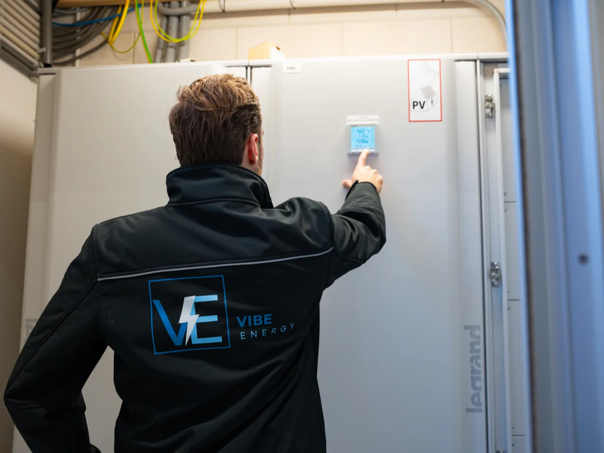
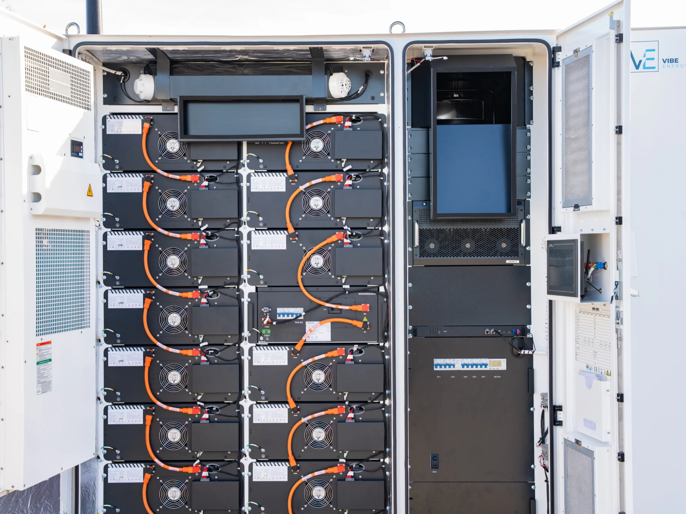

Eén systeem. Volledige controle.
VIBE.CONTROL brengt zonne-energie, batterijopslag, laadinfrastructuur en gebouwinstallaties onder één regelaar — en bepaalt per moment waar het beschikbare vermogen heen gaat.
Waar het vermogen vandaan komt, over een etmaal
Schematische weergave van de regelstrategie. Geen meetdata van een bestaande installatie en geen weergave van de productinterface.
Een dashboard vertelt u wat er gebeurd is.
Monitoring laat achteraf zien wanneer de aansluiting overbelast raakte of waar de piek zat. Dat is nuttig, maar het verandert niets. VIBE.CONTROL grijpt in op het moment zelf: het stuurt de assets aan in plaats van ze alleen te meten.
Het leest uw werkelijke profiel
Kwartierwaarden van opwek en afname, het verbruikspatroon van het pand, de weersverwachting en de tariefmomenten van de dag.
Het beslist binnen vaste grenzen
De operationele grenzen worden vooraf vastgelegd, met een failsafe op de contractwaarde van de aansluiting. Binnen die grenzen optimaliseert het systeem; erbuiten komt het niet.
Het werkt op wat er al staat
Bestaande omvormers en laadpunten worden waar mogelijk via open protocollen onder dezelfde regelaar gebracht, zonder ze te vervangen.

Eén laag over al uw energie-assets.
Geen apart portaal per fabrikant. De assets achter de meter worden samen aangestuurd, vanuit één regelaar met één set grenzen.
Zon op dak
Opwek sturen in plaats van onbenut terugleveren.
Laadplein
Vermogen verdeeld op vertrektijd en laadtoestand.
VIBE.CONTROL
De regelaar op locatie
Batterijopslag
Laden en ontladen op het juiste moment.
Gebouwinstallaties
Klimaat en proceslast meegenomen in de afweging.
En onder alles: de netaansluiting, als vaste bovengrens. Over microgrids
Software is pas iets waard als er ijzer aan hangt.
Vibe is geen softwarebedrijf dat op afstand adviseert. Wij ontwerpen, bouwen en beheren de installaties die deze regelaar aanstuurt — dezelfde partij, dezelfde verantwoordelijkheid.

De regelaar staat op locatie, naast de installatie die hij aanstuurt.
Over energieopslagIn bedrijf op deze locaties.


Goed om te weten.
Welke assets kunnen worden aangesloten?
Batterijsystemen, omvormers voor zonne-energie, laadpunten en gebouwinstallaties zoals klimaat en proceslast. Welke koppeling in uw situatie mogelijk is, bepalen we tijdens de analyse aan de hand van de apparatuur die er staat.
Moeten bestaande installaties worden vervangen?
Meestal niet. Waar de apparatuur een open protocol spreekt, brengen wij haar onder dezelfde regelaar. Vervanging is pas aan de orde als koppelen technisch niet kan.
Hoe wordt voorkomen dat de aansluiting wordt overschreden?
De contractwaarde is als harde grens in de regelaar vastgelegd. Nadert de afname die waarde, dan schaalt het systeem eerst de niet-kritieke vraag terug en zet het de batterij in. Valt de meting weg, dan treedt een failsafe in werking.
Wie bedient het systeem?
In de regel niemand bij u. Het systeem draait autonoom binnen de afgesproken grenzen; Vibe monitort en stuurt de strategie bij. U houdt inzicht in wat het systeem doet.
Wat kost het?
Dat hangt af van het aantal gekoppelde assets en de scope. Bij een energiesysteem dat Vibe levert, is de sturing onderdeel van het geheel.
Zie wat uw assets samen kunnen.
In een half uur lopen wij met u door wat er op uw locatie staat en wat een gestuurde laag daarbovenop zou veranderen.